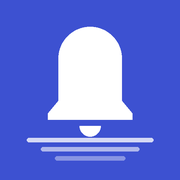

NothingLost Privacy Policy
In short: NothingLost keeps a copy of your notifications on your phone, so you can read a message after the sender deletes it or find a notification you swiped away. Your notifications and messages never leave your phone. They are never uploaded, sold or shared, and we have no way to see them. There is no account and no advertising. The app shares anonymous usage statistics and crash reports that help us improve it, never the content of your notifications, and you can turn this off at any time in Settings.
1. Who we are
NothingLost is an Android app published by an independent developer ("we", "us"). Contact details are at the end of this policy.
2. What the app reads, and where it stays
With your permission (Android's "notification access"), NothingLost reads notifications as they arrive on your phone: the app they came from, the title (for chats, usually the sender's name), the text and the time. For chat apps, it also notices when a message is later deleted, changed or withdrawn by the sender.
This information is stored only in the app's private storage on your device. It is not sent to us or to anyone else, it is excluded from Android cloud backup and device-to-device transfer, and we have no way to see it.
Android hides one-time passwords and some sensitive notifications from apps like this one; NothingLost cannot read those. Photos, voice notes and videos are not saved, only the text shown in the notification.
To keep running on phones that close background apps, NothingLost shows a small silent notification, and it reads Android's own record of when and why the app was closed. That record is used on your phone to tell you if protection was off.
3. Usage statistics and crash reports
To understand which features are useful, where people get stuck, and why the app crashes, NothingLost uses Google Analytics for Firebase and Firebase Crashlytics (provided by Google). This is on by default. You can turn it off at any time in Settings → "Share anonymous usage stats". Turning it off stops collection and resets the random app-instance identifier, so statistics already sent can no longer be linked to your phone.
The statistics record:
- which screens are opened and which features are used, for example that the Deleted tab was opened, a search was started, the protection check was opened or the Pro screen was viewed;
- whether setup steps were completed, for example that notification access was granted;
- that a deleted, changed or withdrawn message was caught (never the message itself), and whether the phone closed the app, with how long it was off rounded into ranges;
- whether a purchase succeeded, was cancelled or failed;
- settings such as whether alerts are on and whether you have Pro;
- where the app was installed from, if the Google Play Store link carried a campaign tag;
- crash reports: technical details of the error and the names of the last few screens or actions before it;
- technical information collected automatically by Firebase: app version, phone maker and model, Android version, language, approximate country, and a random app-instance identifier.
These statistics never include the content of your notifications or messages, sender names, contacts, what you search for, which apps you keep notifications from, or anything you type. We do not collect your advertising ID and do not use the statistics for advertising.
Google processes this data on our behalf under the Google Privacy Policy and Firebase privacy information. Statistics are kept for up to 14 months and are used only to understand how the app is used and to improve it. We do not sell or share them.
4. Purchases
NothingLost offers an optional one-time "Pro" upgrade sold through Google Play. Google processes the payment under the Google Privacy Policy. We never receive your name, email address or payment details. The app only asks Google Play whether Pro has been purchased on your account, so it can unlock Pro features.
5. Things you choose to share
- Export: Pro users can export their saved notifications to a CSV file. The file is created on your device and goes only where you choose to save or send it.
- Telling a friend: the share button shares a link to the app on Google Play. It never includes any of your messages.
- Feedback survey: if you answer the short in-app survey, your browser opens our survey page with your answer and, if known, the campaign that brought you to the app. Nothing is sent unless you tap an answer.
6. Permissions
| Permission | Why NothingLost uses it |
|---|---|
| Notification access | The core feature: to save notifications as they arrive, so you can read them later even if they were deleted or dismissed. You grant it in Android settings and can remove it at any time. |
| Notifications | To alert you when someone deletes or changes a message, and to show the small "watching for deleted messages" notification. |
| Foreground service | To keep NothingLost running on phones that close background apps, so messages are not missed. |
| Run at startup | To keep checking that notification saving is still running after your phone restarts. |
| Internet | Only for the anonymous usage statistics and crash reports described in section 3, and for Google Play purchases. Your notifications are never sent. |
NothingLost does not use your camera, microphone, location, contacts, photos, SMS or call log, and does not use accessibility services.
7. Data retention and deletion
- Saved notifications stay on your device until you delete them. Notifications older than one year are deleted automatically.
- You can choose which apps are kept, delete everything from Settings, remove notification access in Android settings, or uninstall the app, which deletes all saved data.
- Because we hold no copy of your notifications, we cannot restore them once deleted.
- Usage statistics are kept by Google for up to 14 months. Turning statistics off resets the app-instance identifier.
8. Security
Your saved notifications are protected by Android's app sandbox, which keeps other apps from reading them. Statistics are sent to Google over an encrypted connection. We recommend using a screen lock on your phone, because anyone who can open NothingLost on your unlocked phone can read what it saved.
9. Children
NothingLost is intended for adults aged 18 and over and is not directed at children.
10. Changes to this policy
If this policy changes, we will update this page and the effective date above. If we ever collect anything beyond what is described here, we will say so here and in the app's Google Play Data safety section before the change takes effect.
11. Contact
Questions about this policy or your privacy: abdulhady.aariyan@gmail.com